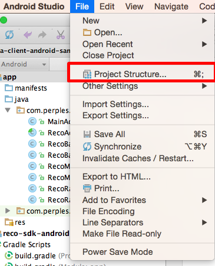
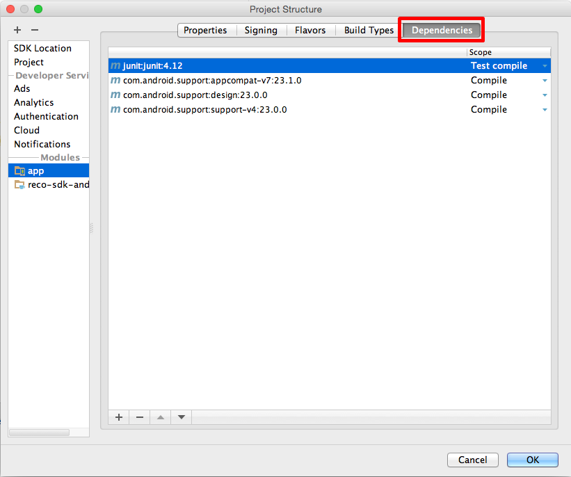
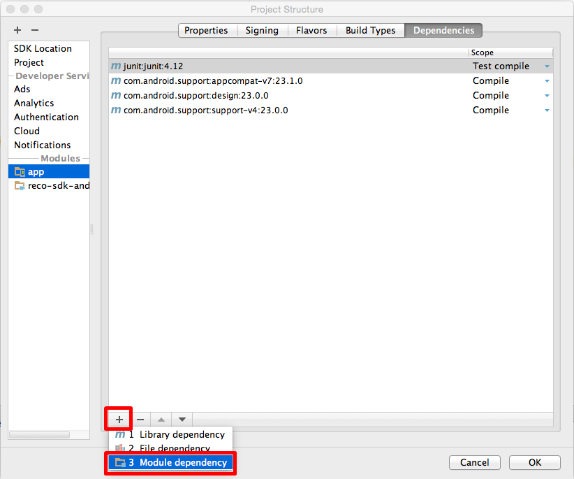
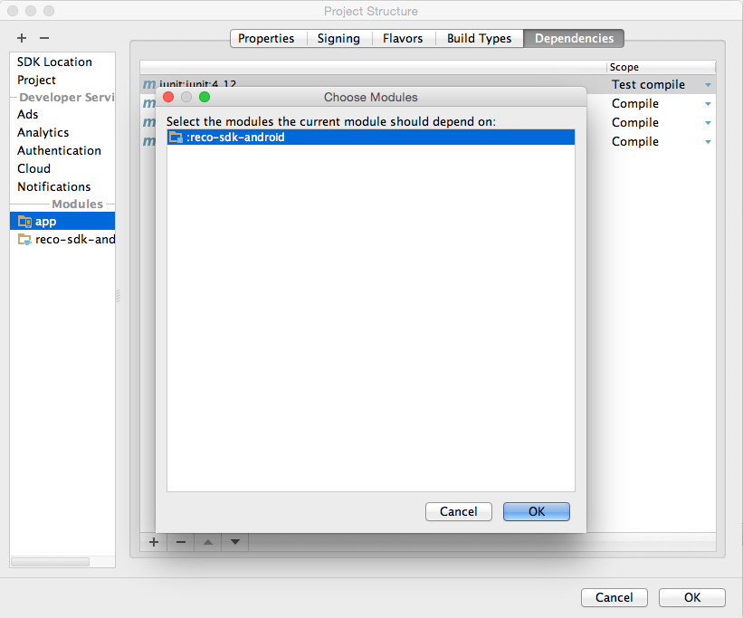

This document describes how to use the RECO SDK of the Perples Inc. to develop android application.
RECO SDK includes the followings:
document/
api/ // API documents
guide/ // User guide documents
sample/ // Sampel project
sdk/ // RECO library (reco-sdk-android_[VERSION_NUMBER].aar)
Tip
This document is based on the Android Studio 2.1.1.
The followings are prerequisites to use RECO SDK for Android.
RECO SDK supports the following API version or higher. Target SDK version or Complie SDK version can be any version higher than 18.
- Minimum Required SDK: API 18: Android 4.3 (Jelly Bean)
- Target SDK: any version higher than Android 4.3 (Jelly Beacon, API 18)
- Complie With: any version higher than Android 4.3 (Jelly Beacon, API 18)
RECO SDK requires the permission of BLUETOOTH_ADMIN and BLUETOOTH.
<uses-permission android:name="android.permission.BLUETOOTH" />
<uses-permission android:name="android.permission.BLUETOOTH_ADMIN" />
Tip
BLUETOOTH_ADMIN is required to allow the application to discover and pair bluetooth devices.
BLUETOOTH is required to use BLUETOOTH_ADMIN.
For Android API 23 (Marshmallow) or higher, one of the following location permissions is required.
<uses-permission android:name="android.permission.ACCESS_COARSE_LOCATION" />
<uses-permission android:name="android.permission.ACCESS_FINE_LOCATION" />
Tip
Only one of the location permissions ( ACCESS_COARSE_LOCATION or ACCESS_FINE_LOCATION ) is required.
Thus, you do not need to declare the permissions if your applocation has one of the permissions already.
In addition, you should include RECOBeaconService inside <application> </application> in order to start region monitoring and region ranging.
<service android:name="com.perples.recosdk.RECOBeaconService" />
In order to declare that your application is available to BLE-capable devices only, include the following.
<uses-feature android:name="android.hardware.bluetooth_le" android:required="true" />
Tip
If you want to make your application available to devices that do not support BLE, you should still include this element in AndroidManifest.xml, but set required=”false”.
You can determine BLE availability by using the following method in RECO SDK at run-time.
RECOBeaconManager recoManager = RECOBeaconManager.getInstance(context);
if(recoManager.isMonitoringAvailable()) {
//You can start region monitoring if the device supports BLE.
}
if(recoManager.isRangingAvailable()) {
//You can start region ranging if the device supports BLE.
}
Tip
This document is based on the Android Studio 2.1.1
reco-sdk-android_[VERSION_NUMBER].aar
1-1. Select File > New > New Module...
1-2. Select “Import .JAR/.AAR Package” .
1-3. Select the SDK library after clicking the button in the red box.
Subproject name will be used to distinguish the module. (For example, reco-sdk-android)
2-1. Select File > Project Structure...

2-2. Select the “Dependencies” tab.

2-3. Select “Module dependency” by clicking “+” button below.

2-4. Select the subproject name you set in 1-3. (For example, :reco-sdk:android)

<uses-permission android:name="android.permission.BLUETOOTH" />
<uses-permission android:name="android.permission.BLUETOOTH_ADMIN" />
<uses-permission android:name="android.permission.ACCESS_COARSE_LOCATION" />
<uses-permission android:name="android.permission.ACCESS_FINE_LOCATION" />
<uses-feature android:name="android.hardware.bluetooth_le" android:required="true" />
<application>
<service android:name="com.perples.recosdk.RECOBeaconService" />
</application>
Tip
Tip
import com.perples.recosdk.RECOBeaconManager;
import com.perples.recosdk.RECOServiceConnectListener;
public class YourClassName implements RECOServiceConnectListener {
..
..
..
public void onServiceConnect() {
//Write the code when the connection to RECOBeaconService is established
}
public void onServiceFail(REOErrorCode errorCode) {
//Write the code when fails to bind RECOBeaconService
}
}
//RECOBeaconManager.getInstance(Context, boolean, boolean) gets context,
//setting for scanning RECO beacons only or all beacons,
//and setting for ranging timeout while monitoring in the background as parameters
boolean mScanRecoOnly = true;
boolean mEnableBackgroundTimeout = true;
RECOBeaconManager recoManager = RECOBeaconManager.getInstance(this, mScanRecoOnly, mEnableBackgroundTimeout);
Tip
recoManager.bind(this);
Tip
onServiceConnect() callback method in the RECOServiceConnectListener is called when the connection to the RECOBeaconService is established after calling this method.
recoManager.unbind();
For more detailed information, please refer to the sample project in the RECO SDK Package.
Region monitoring detects the access of the user device to the region. If monitoring a region is started, the status of the region (inside, outside, and unknown) and enter/exit to the region can be detected.
Tip
import com.perples.recosdk.RECOBeaconRegion;
import com.perples.recosdk.RECOBeaconRegionState;
import com.perples.recosdk.RECOMonitoringListener;
public class YourClassName implements RECOMonitoringListener {
..
..
..
public void didDetermineStateForRegion(RECOBeaconRegionState recoRegionState,
RECOBeaconRegion recoRegion) {
//After starting monitoring a region, this method is called
// when the state of the monitored region is changed
// such as entry or exit to the region.
//This method is also called
// when didEnterRegion(RECOBeaconRegion) or didExitRegion(RECOBeaconRegion)
// callback method is called.
//Write the code when the state of the monitored region is changed
}
public void didEnterRegion(RECOBeaconRegion recoRegion, Collection<RECOBeacon> beacons) {
//When the device is entered the monitored region, this method is called.
//After release of 0.2, list of beacons in the entered region is received.
//Write the code when the device is entered the region
}
public void didExitRegion(RECOBeaconRegion recoRegion) {
//When the device is exited the monitored region, this method is called.
//Write the code when the device is exited the region
}
public void didStartMonitoringForRegion(RECOBeaconRegion recoRegion) {
//This method is called right after starting monitoring a region
//Write the code when starting monitoring the region
}
public void monitoringDidFailForRegion(RECOBeaconRegion recoRegion, RECOErrorCode errorCode) {
//This method is called when starting or stopping monitoring is failed.
//Please refer to the "Error Code" for RECOErrorCode.
//Write the code when monitoring is fail
}
}
recoManager.setMonitoringListener(this);
//You can set scan period. The default is 1 second.
recoManager.setScanPeriod(TIME IN MILLISECOND);
//You can set sleep period, which represents the time lag between scanning.
//The default is 10 seconds.
recoManager.setSleepPeriod(TIME IN MILLISECOND);
ArrayList<RECOBeaconRegion> monitoringRegions = new ArrayList<RECOBeaconRegion>();
monitoringRegions.add(new RECOBeaconRegion(YOUR REGION UUID, YOUR REGION UNIQUE IDENTIFIER));
monitoringRegions.add(new RECOBeaconRegion(YOUR REGION UUID, YOUR REGION MAJOR,
YOUR REGION UNIQUE IDENTIFIER));
for(RECOBeaconRegion region : monitoringRegions) {
try {
//You can set expiration time of the region. The default is 60 seconds.
region.setRegionExpirationTimeMillis(TIME_IN_MILLISECOND);
recoManager.startMonitoringForRegion(region);
} catch (RemoteException e) {
//Write the code when Remote Exception is occurred.
} catch (NullPointerException e) {
//Write the code when Null Pointer Exception is occurred.
}
}
Warning
for(RECOBeaconRegion region : monitoringRegions) {
try {
recoManager.stopMonitoringForRegion(region);
} catch (RemoteException e) {
//Write the code when Remote Exception is occurred.
} catch (NullPointerException e) {
//Write the code when Null Pointer Exception is occurred.
}
}
For more detailed information, please refer to the sample project in the RECO SDK Package.
Tip
RECO SDK for Android perform ranging regions using the instance of the RECOBeaconManager. Before raning regions, the instance of the RECOBeaconManager must be connected to the RECOBeaconService, and RECORangingListener interface is required.
import com.perples.recosdk.RECOBeaconRegion;
import com.perples.recosdk.RECOBeaconRegionState;
import com.perples.recosdk.RECORangingListener;
public class YourClassName implements RECORangingListener {
..
..
..
public void didRangeBeaconsInRegion(Collection<RECOBeacon> recoBeacons,
RECOBeaconRegion recoRegion) {
//This callback method is called every second
// for ranged regions with their ranged beacons
//Write the code when ranged RECOBeacon list is received for the ranged region
}
public void rangingBeaconsDidFailForRegion(RECOBeaconRegion recoRegion, RECOErrorCode errorCode) {
//This method is called when starting or stopping ranging is failed.
//Please refer to the "Error Code" for RECOErrorCode.
//Write the code when ranging is fail
}
}
recoManager.setRangingListener(this);
ArrayList<RECOBeaconRegion> rangingRegions = new ArrayList<RECOBeaconRegion>();
rangingRegions.add(new RECOBeaconRegion(YOUR REGION UUID, YOUR REGION UNIQUE IDENTIFIER));
rangingRegions.add(new RECOBeaconRegion(YOUR REGION UUID, YOUR REGION MAJOR,
YOUR REGION UNIQUE IDENTIFIER));
for(RECOBeaconRegion region : rangingRegions) {
try {
recoManager.startRangingBeaconsInRegion(region);
} catch (RemoteException e) {
//Write the code when Remote Exception is occurred.
} catch (NullPointerException e) {
//Write the code when Null Pointer Exception is occurred.
}
}
Warning
for(RECOBeaconRegion region : rangingRegions) {
try {
recoManager.stopRangingBeaconsInRegion(region);
} catch (RemoteException e) {
//Write the code when Remote Exception is occurred.
} catch (NullPointerException e) {
//Write the code when Null Pointer Exception is occurred.
}
}
For more detailed information, please refer to the sample project in the RECO SDK Package.
Tip
Warning
requestStateForRegion(RECOBeaconRegion) method performs asynchronously, and delivers the results to didDetermineStateForRegion(RECOBeaconRegionState, RECOBeaconRegion) callback method.
import com.perples.recosdk.RECOBeaconRegion;
import com.perples.recosdk.RECOBeaconRegionState;
import com.perples.recosdk.RECOMonitoringListener;
public class YourClassName implements RECOMonitoringListener {
..
..
..
public void didDetermineStateForRegion(RECOBeaconRegionState recoRegionState,
RECOBeaconRegion recoRegion) {
//The result of requestStateForRegion(RECOBeaconRegion) method is received
//Write the code when the result is received.
}
public void didEnterRegion(RECOBeaconRegion recoRegion, Collection<RECOBeacon> beacons) {
//When the device is entered the monitored region, this method is called.
//After release of 0.2, list of beacons in the entered region is received.
//Write the code when the device is entered the region
}
public void didExitRegion(RECOBeaconRegion recoRegion) {
//When the device is exited the monitored region, this method is called.
//Write the code when the device is exited the region
}
public void didStartMonitoringForRegion(RECOBeaconRegion recoRegion) {
//This method is called right after starting monitoring a region
//Write the code when starting monitoring the region
}
public void monitoringDidFailForRegion(RECOBeaconRegion recoRegion, RECOErrorCode errorCode) {
//This method is called when starting or stopping monitoring is failed.
//Please refer to the "Error Code" for RECOErrorCode.
//Write the code when monitoring is fail
}
}
RECOBeaconRegion region = new RECOBeaconRegion(YOUR REGION UUID,
YOUR REGION UNIQUE IDENTIFIER);
recoManager.setMonitoringListener(this);
recoManager.startMonitoringForRegion(region);
recoManager.requestStateForRegion(region);
Warning
For more detailed information, please refer to the sample project in the RECO SDK Package.
RECOBeaconRegion is defined by the reach of BLE Beacon signals. RECOBeaconRegion is an area defined by proximity uuid, major, and minor of the BLE Beacon.
RECOBeaconRegion is identified by a combination of the following values.
| Store | San Francisco | New York | Chicago | |
|---|---|---|---|---|
| Proximity UUID | 24DDF411-8CF1-440C-87CD-E368DAF9C93E | |||
| Major | 1001 | 1002 | 1003 | |
| Minor | Clothing | 100 | 100 | 100 |
| Shoes | 200 | 200 | 200 | |
| Jewelry | 300 | 300 | 300 | |
For example, the regions can be defined by the following.
If a region is defined by proximity uuid only, the region is the extent of any stores. The region with proximity uuid detects the beacon signal containing the proximity uuid.
String mProximityUuid = "24DDF411-8CF1-440C-87CD-E368DAF9C93E";
String mIdentifier = "ALL Stores";
RECOBeaconRegion mRecoRegion = new RECOBeaconRegion(mProximityUuid, mIdentifier);
Each store can be uniquely identified by the combination of proximity uuid and major. The region defined by the combination of proximity uuid and major detects the beacon signal containing the proximity uuid and major.
String mProximityUuid = "24DDF411-8CF1-440C-87CD-E368DAF9C93E";
int mMajor1 = 1001;
int mMajor2 = 1002;
int mMajor3 = 1003;
RECOBeaconRegion mRecoRegion1 = new RECOBeaconRegion(mProximityUuid, mMajor1, "San Francisco");
RECOBeaconRegion mRecoRegion2 = new RECOBeaconRegion(mProximityUuid, mMajor2, "New York");
RECOBeaconRegion mRecoRegion3 = new RECOBeaconRegion(mProximityUuid, mMajor3, "Chicago");
Each section in each store can be uniquely identified by the combination of proximity uuid, major, and minor. The region with proximity uuid, major, and minor detects the beacon signal containing all of them.
String mProximityUuid = "24DDF411-8CF1-440C-87CD-E368DAF9C93E";
int mMajor1 = 1001;
int mMajor2 = 1002;
int mMajor3 = 1003;
int mMinor1 = 100;
int mMinor2 = 200;
int mMinor3 = 300;
RECOBeaconRegion mRecoRegion1 = new RECOBeaconRegion(mProximityUuid, mMajor1, mMinor1, "Clothing section of the branch in San Francisco");
RECOBeaconRegion mRecoRegion2 = new RECOBeaconRegion(mProximityUuid, mMajor2, mMinor1, "Clothing section of the branch in New York");
RECOBeaconRegion mRecoRegion3 = new RECOBeaconRegion(mProximityUuid, mMajor3, mMinor1, "Clothing section of the branch in Chicago");
RECOBeaconRegion mRecoRegion4 = new RECOBeaconRegion(mProximityUuid, mMajor1, mMinor2, "Shoes section of the branch in San Francisco");
RECOBeaconRegion mRecoRegion5 = new RECOBeaconRegion(mProximityUuid, mMajor2, mMinor3, "Jewelry section of the branch in New York");
RECOBeaconRegion mRecoRegion6 = new RECOBeaconRegion(mProximityUuid, mMajor3, mMinor2, "Shoes section of the branch in Chicago");
Warning
The region cannot be defined by major or minor only. If you want to create a region with a specific major, the region should contain proper proximity uuid. For the region with a specific minor, the region should be defined by the combination of proximity uuid, major, and the minor value.
Tip
Warning
Scan period, sleep period, and the number of beacons may impact the battery usage.
For more detailed information, please refer to the sample project, especially RECOBackgroundRangingService.java, in the RECO SDK Package.
Warning
Ranging is to scan beacons around continuously, which means DOES NOT sleep to scan. It may impact the battery drain, so running ranging in the background is not recommended. Also, ranging will timeout after 10 seconds ranging while monitoring (in the background). If you do not want to set timeout for ranging while monitoring in the background, please set false for the setting.
//If you do not want to set timeout for ranging while monitoring in the background,
//create an instance of RECOBeaconManager as follows
//warning: it affetcs the battery consumption
RECOBeaconManager recoManager = RECOBeaconManager.getInstance(this, false);
There is a known android bug that some android devices scan BLE devices only once. (link: http://code.google.com/p/android/issues/detail?id=65863) To resolve the bug in our SDK, you can use setDiscontinuousScan() method of the RECOBeaconManager. This method is to set whether the device scans BLE devices continuously or discontinuously. The default is set as FALSE. Please set TRUE only for specific devices.
Warning
If you set TRUE, didRangeBeaconsInRegion() callback method may not be called every second.
| Error Code | 설명 |
|---|---|
| RECO_MANAGER_NOT_BIND | RECOBeaconManager is not bound to RECOBeaconService. Call RECOBeaconManager.bind(RECOServiceConnectListener) first. |
| RECO_NULL_REGION | Cannot monitor or range null RECOBeaconRegion. Create the instance of the RECOBeaconRegion and set it as a parameter. |
| RECO_NULL_MONITORING_LISTENER | RECOBeaconManager does not have RECOMonitoringListener. Call RECOBeaconManager.setMonitoringListener(RECOMonitoringListener) first. |
| RECO_NULL_RANGING_LISTENER | RECOBeaconManager does not have RECORangingListener. Call RECOBeaconManager.setRangingListener(RECORangingListener) first. |
| RECO_LOCATION_PERMISSION_NOT_GRANTED | Location Permission is not granted. The RECO SDK may not work properly for Android API 23 (marshmallow) or higher. Request one of the location permissions ( “ACCESS_COARSE_LOCATION” or “ACCESS_FINE_LOCATION” ) first. |
This RECO Beacon Software Development Kit Agreement (“Agreement”) is between the individual or entity (“you” or “Developer”) that accepts it, and Perples, Inc. (“Perples”). You accept this Agreement by clicking an “agree” or similar button, where this option is provided by Perples, or if you use or access the Software Development Kit (“SDK”) or any part of the SDK. Your agreement to these terms also binds your authorized users, your company or organization. If you do not agree to the terms of this Agreement, do not accept it. Before accepting this Agreement, please carefully read it. Capitalized terms used but not defined in the body of this Agreement have the meaning given them in the “Definitions” exhibit.
Last updated: May 26, 2015
Development License
1.1. Development License. Conditioned upon compliance with the terms and conditions of this Agreement, Perples hereby grants you a limited, non-exclusive, personal, revocable, non-sublicensable and non-transferable license to: (a) install and use a reasonable number of copies of the SDK on computers owned or controlled by you for the purpose of developing and testing applications that are intended for use solely in connection with a RECO Beacon Device; and (b) modify and incorporate into your Application any sample code provided in the SDK.
1.2. Restrictions. The license granted to you in Section 1.1 is subject to the following restrictions, as well as others listed in this Agreement:
1.2.1. Except as expressly permitted in Section 1.1: (a) you may not publish, distribute or copy the SDK, and (b) you may not modify or create derivative works of the SDK.
1.2.2. You may use the SDK solely in connection with a RECO Beacon Device.
1.2.3. You may not, and may not enable others to, reverse engineer, decompile, disassemble or otherwise attempt to reconstruct, identify or discover any source code, underlying ideas, techniques, or algorithms in the SDK, the RECO Beacon Device or any software that forms part of the SDK, nor attempt to circumvent any related security measures (except as and only to the extent any foregoing restriction is prohibited by applicable law or permitted by applicable law notwithstanding the foregoing restriction, or to the extent as may be permitted by licensing terms governing use of any open source software components or sample code included within the SDK).
1.2.4. You may not remove, obscure, or alter any proprietary rights or confidentiality notices within the SDK or any software, documentation or other materials in it or supplied with it.
1.2.5. You may not create Applications or other software that prevent or degrade the interaction of Applications developed by others with the Software.
1.3. Updates. The terms of this Agreement will apply to any Updates that Perples makes available to you. You agree that Updates may require you to change or update your Application, and may affect your ability to use, access or interact with the SDK.
1.4. Trademarks. You may indicate that your Application is “for RECO Beacon” or “RECO Beacon-enabled”. However, unless provided in an agreement between you and Perples, you may not otherwise use “RECO Beacon”, “RECO”, or any other trademark of the RECO Beacon by Perples in connection with your Application or company, or in any URL, product, service, name field or logos created by you.
2.1. Distribution License. Conditioned upon compliance with the terms and conditions of this Agreement, Perples hereby grants you a limited, non-exclusive, personal, revocable, non-transferable license under Perples’s applicable intellectual property rights to the extent necessary to: (a) copy and distribute (or have copied and distributed) the RECO Beacon Redistributables, solely as compiled with, incorporated into, or packaged with, your Application; and (b) to make (but not have made), use, sell, offer for sale and import your Application.
2.2. Restrictions. The license granted to you in Section 2.1 is subject to the following restrictions, as well as others listed in this Agreement:
2.2.2. You may not, directly or indirectly, publish, post or otherwise make available the RECO Beacon Redistributables other than as compiled with, incorporated into, or packaged with, your Application.
Sample code made publicly available by Perples on its developer web site is provided subject to the MIT license, unless otherwise noted in the license, notice or readme files distributed with the example or in related documentation. The SDK may otherwise include software or other materials that are provided under a separate license agreement, and that separate license will govern the use of such software or other materials in the event of a conflict with this Agreement. Any such separate license agreement may be indicated in the license, notice, or readme files distributed with the applicable software or other materials or in related documentation.
4.1. Notwithstanding anything in this Agreement, you are not licensed to, and you agree not to, use, copy, sell, offer for sale, or distribute the SDK or RECO Beacon Devices (whether compiled with, incorporated into, or packaged with your Application or otherwise), for or in connection with uses where failure or fault of the RECO Beacon Device, RECO Beacon Redistributables or your Application could lead to death or serious bodily injury of any person, or to severe physical or environmental damage (“High Risk Use”). ANY SUCH USE IS STRICTLY PROHIBITED.
4.2. You acknowledge the SDK may allow you to develop Applications that enable the control of motorized or mechanical equipment, or other systems, machines or devices. If you elect to use the SDK in such a way, you must take steps to design and test your Applications to ensure that your Applications do not present risks of personal injury or death, property damage, or other losses. The RECO Beacon Device, the RECO Beacon Redistributables and other software in the SDK may not always function as intended. You must design your Applications so that any failure of a RECO Beacon Device, a RECO Beacon Redistributable and/or such other software does not cause personal injury or death, property damage, or other losses. If you choose to use the SDK, (i) you assume all risk that use of the RECO Beacon Device and/or such other software by you or by any others causes any harm or loss, including to the end users of your Applications or to third parties, (ii) you hereby waive, on behalf of yourself and your Authorized Users, all claims against Perples and its affiliates related to such use, harm or loss (including, but not limited to, any claim that a RECO Beacon Device, a RECO Beacon Redistributable or such other software is defective), and (iii) you agree to hold Perples and its affiliates harmless from such claims.
5.1. Beta Software etc. Obligations. You acknowledge and agree that Perples may share alpha or beta software or hardware with you that it identifies as non-public. If so, you agree not to disclose such software or hardware to others without the prior written consent of Perples until the time, if any, it is made public by Perples, and to use such software or hardware only for the purposes expressly permitted by this Agreement.
6.1. Ownership. Perples agrees that it obtains no right, title or interest from you (or your licensors) under this Agreement in or to any of your Applications, including any intellectual property rights which subsist in those Applications. As between Perples and you, Perples owns all right, title and interest, including all intellectual property rights, in and to the SDK and the RECO Beacon Redistributables, other than any third party software or materials incorporated in the SDK, and you agree not to contest Perples’s ownership of any of the foregoing.
6.2. Feedback. You may (but are not required to) provide feedback, comments and suggestions (collectively, “Feedback”) to Perples. You hereby grant to Perples a non-exclusive, perpetual, irrevocable, paid-up, transferable, sub-licensable, worldwide license under all intellectual property rights covering such Feedback to use, disclose and exploit all such Feedback for any purpose.
In addition to your other obligations under this Agreement, you warrant and agree that:
7.1. You will use the SDK only in accordance with all accompanying documentation, in the manner expressly permitted by this Agreement, and your use of the SDK, and the marketing, sales and distribution of your Application, will be in compliance with all applicable laws and regulations and all Republic of Korea and local or foreign export and re-export restrictions applicable to the technology and documentation provided under this Agreement (including privacy and data security laws and regulations), and you will not develop any Application which would commit or facilitate the commission of a crime, or other tortious, unlawful, or illegal act.
We reserve the right to change this Agreement, the SDK or the Perples development and licensing program at any time in our discretion. Perples may require that you either accept and agree to the new terms of this Agreement, or, if you do not agree to the new terms, cease or terminate your use of the SDK. Your continued use of the SDK after changes to this Agreement take effect will constitute your acceptance of the changes. If you do not agree to a change, you must stop using the SDK and terminate this Agreement. Any termination of this Agreement by you under this Section 8 (and only this Section 8) will not affect your right, subject to your continued compliance with your obligations under this Agreement, to continue to distribute versions of your Application created and first distributed before termination, and will not affect the right of your End Users to continue using such versions of your Application, both of which rights will survive termination.
9.1. Term. This Agreement will continue to apply until terminated by either you or Perples as set out below.
9.2. Termination by You. If you want to terminate this Agreement, you may terminate it by uninstalling and destroying all copies of the SDK that are in the possession, custody or control of you, your Authorized Users and your organization.
9.3. Termination by Perples. Perples may at any time, terminate this Agreement with you for any reason or for no reason in Perples’s sole discretion, including as a result of non-compliance by you with the restrictions in Section 1.2 or Section 2.2, or for other reasons.
9.4. Effect of Termination. Upon termination of this Agreement, all rights granted to you under this Agreement will immediately terminate and you must immediately cease all use and destroy all copies of the SDK in your and your Authorized Users’ possession, custody or control, and, except as specifically set out in Section 8, cease your distribution of Applications. Sections 1.2, 2.2, 5.1, 6, 9.4, and 10 - 13, and the Definitions exhibit, will survive termination of this Agreement. Termination of this Agreement will not affect the right of your End Users who have downloaded your Application prior to termination to continue using it.
You agree to indemnify, hold harmless and, at Perples’s option, defend Perples and its affiliates and their respective officers, directors, employees, agents, and representatives harmless from any and all judgments, awards, settlements, liabilities, damages, costs, penalties, fines and other expenses (including court costs and reasonable attorneys’ fees) incurred by them arising out of or relating to any third party claim (a) with respect to your Application, including products liability, privacy, or intellectual property infringement claims, or (b) based upon your negligence or willful misconduct or any breach or alleged breach of your representations, warranties, and covenants under this Agreement. In no event may you enter into any settlement or like agreement with a third party that affects Perples rights or binds Perples in any way, without the prior written consent of Perples.
THE SDK AND THE RECO BEACON REDISTRIBUTABLES ARE PROVIDED “AS IS” WITHOUT WARRANTY OF ANY KIND. PERPLES, ON BEHALF OF ITSELF AND ITS SUPPLIERS, HEREBY DISCLAIMS ALL REPRESENTATIONS, PROMISES, OR WARRANTIES, WHETHER EXPRESS, IMPLIED, STATUTORY, OR OTHERWISE, WITH RESPECT TO THE SDK AND THE RECO BEACON REDISTRIBUTABLES, INCLUDING THEIR CONDITION, AVAILABILITY, OR THE EXISTENCE OF ANY LATENT DEFECTS, AND PERPLES SPECIFICALLY DISCLAIMS ALL IMPLIED WARRANTIES OF MERCHANTABILITY, TITLE, NONINFRINGEMENT, SUITABILITY, AND FITNESS FOR ANY PURPOSE. PERPLES DOES NOT WARRANT THAT THE SDK OR THE RECO BEACON REDISTRIBUTABLES WILL BE ERROR-FREE OR THAT THEY WILL WORK WITHOUT INTERRUPTION.
THE SOFTWARE IS PROVIDED “AS IS”, WITHOUT WARRANTY OF ANY KIND, EXPRESS OR IMPLIED, INCLUDING BUT NOT LIMITED TO THE WARRANTIES OF MERCHANTABILITY, FITNESS FOR A PARTICULAR PURPOSE AND NONINFRINGEMENT. IN NO EVENT SHALL THE AUTHORS OR COPYRIGHT HOLDERS BE LIABLE FOR ANY CLAIM, DAMAGES OR OTHER LIABILITY, WHETHER IN AN ACTION OF CONTRACT, TORT OR OTHERWISE, ARISING FROM, OUT OF OR IN CONNECTION WITH THE SOFTWARE OR THE USE OR OTHER DEALINGS IN THE SOFTWARE. MOREOVER, PERPLES SHALL NEVER BE LIABLE FOR ANY DEFECT IN SOURCE CODE WRITTEN BY YOU WHEN RELYING ON THE SDK.
13.1. Assignment. You may not assign this Agreement without the prior written consent of Perples. Any assignment without such consent is void and of no effect. Perples may assign this Agreement without your consent in connection with (a) a merger or consolidation of Perples, (b) a sale or assignment of substantially all its assets, or (c) any other transaction which results in another entity or person owning substantially all of the assets of Perples. In the event of a permitted assignment, this Agreement will inure to the benefit of and be binding upon the parties and their respective successors and permitted assigns.
13.2. Waiver; Severability. The failure of the other party to enforce any rights under this Agreement will not be deemed a waiver of any rights. The rights and remedies of the parties in this Agreement are not exclusive and are in addition to any other rights and remedies provided by law. If any provision of this Agreement is held by a court of competent jurisdiction to be contrary to law, the remaining provisions of this Agreement will remain in full force and effect.
13.3. Reservation. All licenses not expressly granted in this Agreement are reserved and no other licenses, immunity or rights, express or implied, are granted by Perples, by implication, estoppel, or otherwise. The software in the SDK is licensed, not sold.
13.4. Export Restrictions. The software is subject to Republic of Korea export laws and regulations. You must comply with all domestic and international export laws and regulations that apply to the software. These laws include restrictions on destinations, end users, and end use.
13.5. Relationship of the Parties. This Agreement does not create any agency, partnership, or joint venture relationship between Perples and you. This Agreement is for the sole benefit of Perples and you (and indemnified parties), and no other persons will have any right or remedy under this Agreement.
13.6. Notice. The address for notice to Perples under this Agreement is:
Perples, Inc. 8F, 209 Dosan-daero, Gangnam-gu, Seoul, South Korea
13.7. Entire Agreement. This Agreement is the entire understanding of the parties with respect to its subject matter and supersedes any previous or contemporaneous communications, whether oral or written with respect to such subject matter.
Definitions
Whenever capitalized in this Agreement:
“Authorized Users” means your employees and contractors, members of your organization or, if you are an educational institution, your faculty, staff and registered students, who (a) have a demonstrable need to know or use the SDK in order to develop and test Applications on your behalf and (b) each have written and binding agreements with you to protect against the unauthorized use and disclosure of the SDK consistent with the terms and conditions of this Agreement. Authorized Users do not include End Users.about:blank
“End User” means your end user customer(s) or licensee(s).
“Perples” “we” or “us” means Perples, Inc. with a principal place of business at 8F, 209 Dosan-daero, Gangnam-gu, Seoul, South Korea.
“RECO Beacon Device” means the RECO Beacon, a bluetooth low energy beacon device that sends out Bluetooth signals in regular intervals.
“RECO Beacon Redistributables” means any .jar files, .so files, .framework files, or other materials we specifically designate in the SDK excluding the sample code as made available for incorporation into or distribution with Applications.
“SDK” means, collectively, the RECO Beacon Redistributables, tools, APIs, software, documentation, other materials and any updates to the foregoing that may be provided or made available to you by Perples in connection with this Agreement, via the RECO Member Center or otherwise for use in connection with the Perples development program to develop Applications.
“Updates” means updates, upgrades, modifications, enhancements, revisions, new releases or new versions to the SDK that Perples may make available to you in connection with this Agreement.
“RECO Member Center” means the developer portal (http://member.reco2.me) provided by Perples.
Other capitalized terms used in this Agreement have the meaning given them elsewhere in this Agreement.
{kind=link}
{kind=link}
{kind=link}
{kind=link}